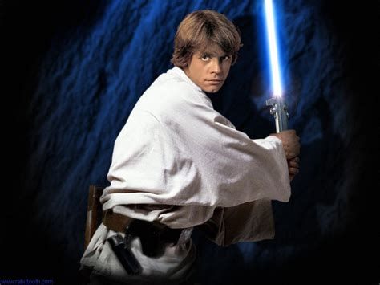

Things that are great about star wars
Lightsabers
i personally love lightsabers,
They are a great addition to the Film and make it really clear to the viewers,
that its in the future or an other galaxy. They make it look like its a Sci-Fi Movie.
